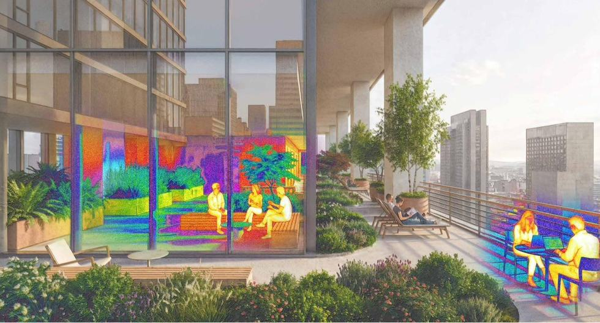
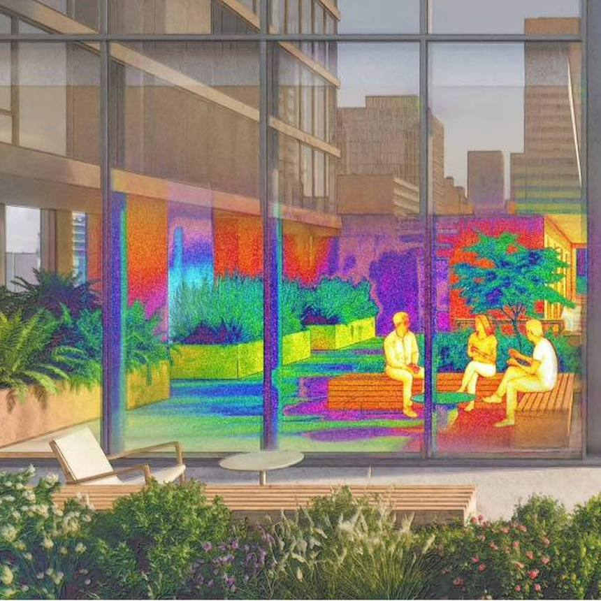
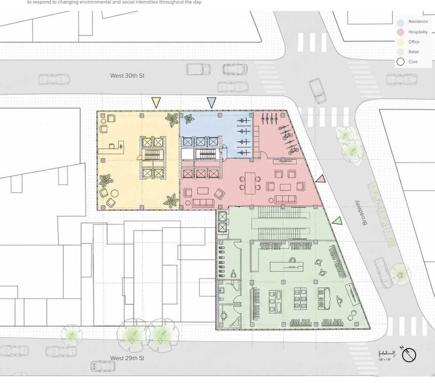
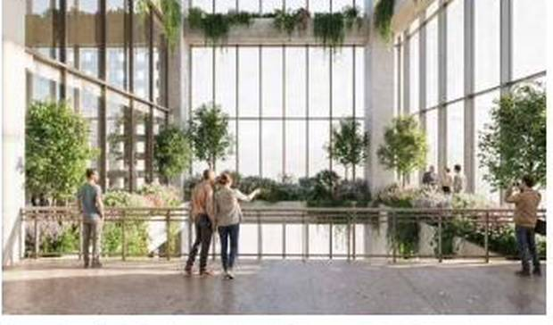
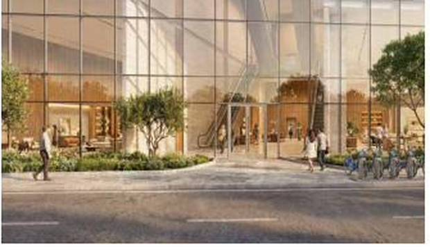
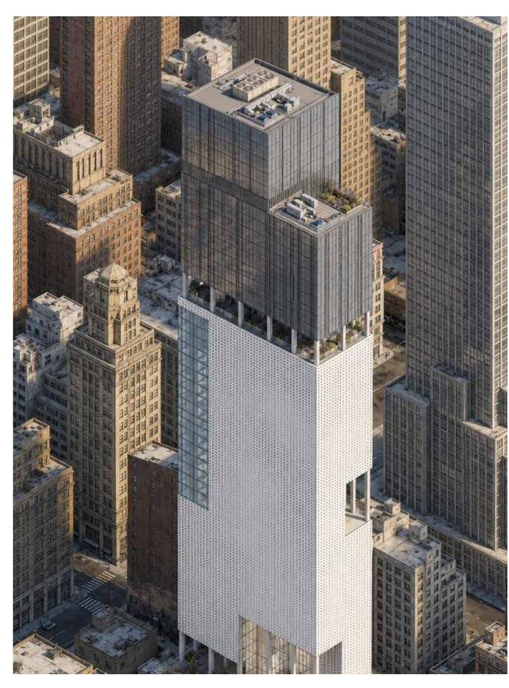
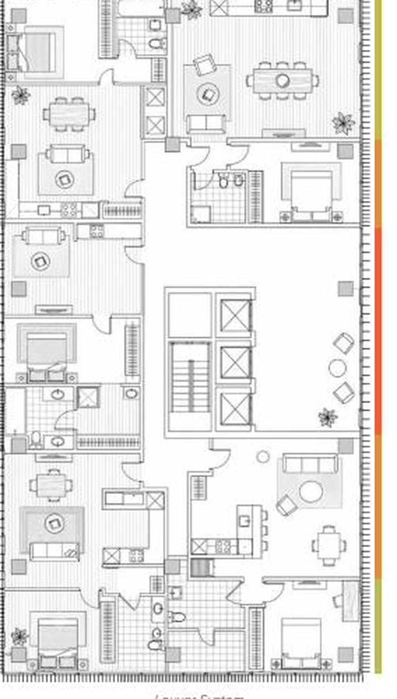
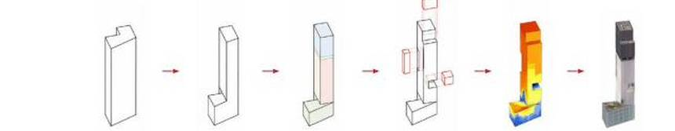

Calibrated Environment
A mixed-use tower organized through daylight analysis, thermal mapping, and occupancy-based program distribution. Environmental performance becomes the framework that calibrates massing, facade, and program across residential, retail, and public floors.








Full documentation available in the PDF portfolio.